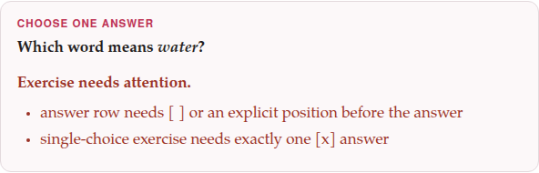

The exercise block
Every exercise, whatever its type, is written the same way: an opening line, some fields (name: value), some rows (lines starting with -), and a closing line. The body deliberately looks like ordinary Markdown, so that it reads well as plain text too.
target: en:::exercise true-falseprompt: Decide whether each statement is true or false.- [The Earth goes round the Sun.]{tl} => true- [A week has eight days.]{tl} => falseexplanation-correct: [A week has seven days.]{tl}:::1. The opening and closing lines#
The block opens with :::exercise and the type, alone on a line: :::exercise fill-blanks. Case does not matter — :::Exercise Fill-Blanks is the same exercise. Nothing may follow the type: a line such as :::exercise fill-blanks for lesson 3 is not an exercise at all, and is drawn as a line of text.
The type may instead go in a field of its own, type:, with the opening line left bare. A type: field counts only when the opening line names no type; after :::exercise yes-no it is an unknown field, and ignored.
target: de:::exercisetype: odd-one-outprompt: Which word is not a colour?- [ ] [rot]{tl}- [ ] [blau]{tl}- [x] [Buch]{tl}- [ ] [grün]{tl}:::The block ends at the first line that is ::: and nothing else, however far it is indented. Everything in between belongs to the exercise and to nothing else: a ## there is not a heading, and a - line is a row, not a list. An exercise whose ::: is missing runs to the end of the document, swallowing everything after it, and says so (below).
2. Fields#
A field is a name, a colon and a value: prompt: Choose the right word. The name starts with a letter and holds letters, digits and hyphens; its case does not matter. Each type takes its own fields (its page lists them), and some every exercise takes.
- One line.
- A value is the rest of its line. To break a line inside it, write
⏎:prompt: Read the sentence.⏎Then choose a word. - Several lines:
name: |. - A value of
|alone takes the lines indented under it (two spaces are enough), blank lines included, until a line that is not indented. Each line of the block becomes a line of the value — a prompt written this way keeps its line breaks. This is what the form writes whenever a field holds more than one line. - A Jolly card’s fields go on by themselves.
- On a Jolly flashcard the four text fields may also simply continue on the lines under them, until the next field or the closing
:::: see Flashcards. - A field written twice
- counts once: the second one.
- An unknown field is ignored
- , and nothing says so. That lets a newer field sit in an older document, but it also means a misspelt name —
promt:— does nothing and says nothing: if a field seems to have no effect, check its spelling.
target: fr:::exercise single-choiceprompt: | Read the sentence, then choose the missing word. [Je ___ au marché tous les samedis.]{tl}- [x] [vais]{tl}- [ ] [va]{tl}- [ ] [allons]{tl}explanation-correct: With [je]{tl}, *I*: [je vais]{tl}.:::Je ___ au marché tous les samedis.
3. Rows#
A row is a line starting with -. What comes after the dash depends on the family:
| Family | A row | Example |
|---|---|---|
choice (single-choice, choose-all, incorrect-part, odd-one-out) | a mark in brackets, then the answer: [x] right, [ ] wrong | - [x] casa |
choice (yes-no, true-false) | the question or statement, =>, the answer | - It is Monday. => false |
| matching | the left side, =>, the right side | - casa => house |
fill-blanks | the name of the blank it fills, in brackets, then the word; [ ] for a distractor | - [verb] read |
order-sentences, construct-sentence | the position, in brackets, then the text | - [1] Good morning. |
flashcard | no rows at all |
A few rules hold for every row:
- The mark is a bracket of its own, before the text.
- A choice or a placement row that starts with a target-language mark still needs its own bracket first:
- [ ] [سلام]{tl}. A row such as- [سلام]{tl}is refused rather than read, because its first bracket is plainly the word’s, not a mark — reading it as a mark would have lost the word. - A right answer is
[x]. [yes],[true]and[correct](in any case) are read as right too; anything else in the brackets —[ ],[-],[no]— is a wrong answer.=>splits a row at its first arrow.- To write an arrow inside one side, escape it:
\=>is shown as=>and splits nothing. - A yes/no or true/false answer
- may be written in any case:
YES,True.
target: it:::exercise match-translationsprompt: Match each verb and its past participle with their translations.- [andare \=> andato]{tl} => to go \=> gone- [vedere \=> visto]{tl} => to see \=> seen- [fare \=> fatto]{tl} => to do \=> done:::4. Blanks: [[name]]#
A fill-in exercise’s sentence marks each blank with its name in double brackets, [[verb]], and the row - [verb] … gives the word that belongs there. The name is anything without a bracket in it — [[1]], [[noun]], [[a b]] — and every blank’s name must have a row, and every named row a blank.
Give each blank a name of its own and one row. The parser does not catch a name used twice, and says nothing about it; but two blanks of one name share one block, so the exercise can never be marked right, and of two rows naming one blank only the last counts.
A blank may sit inside a target-language mark, so a sentence of the language being learned is written as one sentence, blanks and all: text: [من [[verb]] کتاب را]{tl}. It may not sit inside a formula. Placement has the details.
5. Blank lines and comments#
Blank lines between the fields and rows are ignored; space an exercise out as you like. A line that starts with <!-- is a comment and is left out — one line only: the lines of a comment that runs on are read as text, and refused.
:::exercise yes-no<!-- Lesson 4: check the colours before the reading passage -->prompt: Answer each question.- Is the sky blue on a clear day? => yes- Is snow black? => no:::Any other line — one that is neither a field, nor a row, nor blank, nor a comment — is an error: a sentence that was meant as the second line of a prompt, for example. Write such a prompt with prompt: |, or with ⏎.
6. What a field or a row may hold#
Everything inside a line of the dialect: […]{tl} for the target language (in a language written in the Latin alphabet, every word of it must be marked; in a language with a script of its own, the script is found by itself), colours, {translit:…} and {kana:…}, *italic* and **bold**, links and [label](doc:Name) links to other documents, footnotes ([^1], ^[…]), ✗ and ✅, ⏎ for a line break, [x^2]{math} for a formula, and a picture:  anywhere in a prompt, a row, a pair, a sentence, an explanation or a card. Fields every exercise takes has more on each.
Right-to-left languages, one rule. Inside one target-language run — [من کتاب را خواندم]{tl} — the text is in its natural order, as you would type it. But when a left-to-right line holds several separate right-to-left pieces, each piece is one box in a left-to-right row of boxes: write the boxes in the order you want them seen, from left to right, and leave the text inside each box as it is. The Persian word دانشگاه, read from the right as dān + -eš + -gāh, is written in an English answer as [گاه]{translit:-gāh} + [ش]{translit:-eš} + [دان]{translit:dān}.
7. Where an exercise may sit#
Anywhere a paragraph may, on lines of its own — and inside a > box, where every line of it, the opening and closing ones included, starts with >:
target: zh> **Review.** The numbers from one to three.>> :::exercise match-translations> prompt: Match each number with its word.> - 一 => one> - 二 => two> - 三 => three> :::Review. The numbers from one to three.
An exercise in a box has no ✎ Edit in the editor’s preview: it cannot be reopened in the form, and is edited in the Markdown. It has its + Deck button on the reading view like any other.
An exercise cannot sit inside another exercise, nor inside a Jolly card’s field (the card says back-primary cannot hold an exercise).
8. When something is wrong#
An exercise the parser cannot read is not dropped: it is drawn as a box headed Exercise needs attention., listing what is wrong, in its place on the page. It is not scored, and has no + Deck button and no ⤢ Enlarge; on paper it is one line, Exercise needs attention in the Markdown source., in red (in bold black when the PDF is printed in black and white). A deck will not take it: + Add all exercises leaves it out and says how many it left out. Should a deck ever hold such an exercise, its list marks it needs attention, and when it comes up for study it offers only ✎ Edit and Skip. This guide’s compiler says each such message too, with its file and line.

:::exercise single-choiceprompt: Which word means *water*?- آب- [ ] نان- [ ] سیب:::What each message means, and what to do about it:
| Message | What is wrong |
|---|---|
exercise is missing its closing ::: line | no ::: line after the exercise: it ran to the end of the document |
exercise type is missing | a bare :::exercise and no type: field |
unknown exercise type: … | the type is misspelt, or is not one of the thirteen |
unrecognized line: … | a line that is not a field, a row, a blank line or a comment |
answer row needs [ ] or an explicit position before the answer | a choice or placement row with no mark of its own before its text |
pair row needs left => right | a matching, yes/no or true/false row without =>, or with nothing on one side |
choice exercise has no alternatives | a choice exercise with no rows |
single-choice exercise needs exactly one [x] answer | single-choice, incorrect-part or odd-one-out with no right answer, or with more than one |
choose-all needs at least one [x] answer | choose-all with nothing marked right |
boolean exercise has no questions | yes-no or true-false with no rows |
yes-no answer must be no or yes, true-false answer must be false or true | an answer after => that is not one of the two |
fill-blanks text needs at least one [[slot]] | text: has no blank |
fill-blanks slots and [slot] answer rows differ | a blank with no row that names it, or a named row with no blank |
ordering rows need numeric positions such as [1] | an order-sentences or construct-sentence exercise with no rows, or a row whose mark is not a number |
ordering positions must be unique | two rows with the same position |
answer-direction must be rtl or ltr | anything else in answer-direction: |
matching exercise has no pairs | a matching exercise with no rows |
image must name a file under images/ (e.g. images/map.png) | and the same for image-answer |
audio must name a file under audio/ (e.g. audio/word.mp3) | and the same for audio-answer, front-audio, back-audio |
unknown flashcard card-type: … | a card-type other than vocab, opposites and jolly |
a vocab flashcard needs front or target | a vocabulary card with no word on its front |
an opposites flashcard needs target and opposite | one of the two words is missing |
a Jolly flashcard needs a front field and a back field | a side with neither of its two fields |
… cannot hold an exercise | a Jolly field with an :::exercise in it |
a flashcard's pictures are front-image and back-image, not image | and the same for image-answer |
a flashcard's recordings are front-audio and back-audio, not audio | and the same for audio-answer |
a flashcard has no answer rows: … | a - line on a card: put a list inside a field instead |
The last one is worth a word: on a card, a line starting with - would be an answer row on any other exercise, and a card has no answers. Rather than let the list vanish, the card refuses it and tells you to write it inside a field — notes: | on a vocabulary card, front-primary: | on a Jolly one — with its lines indented under it.